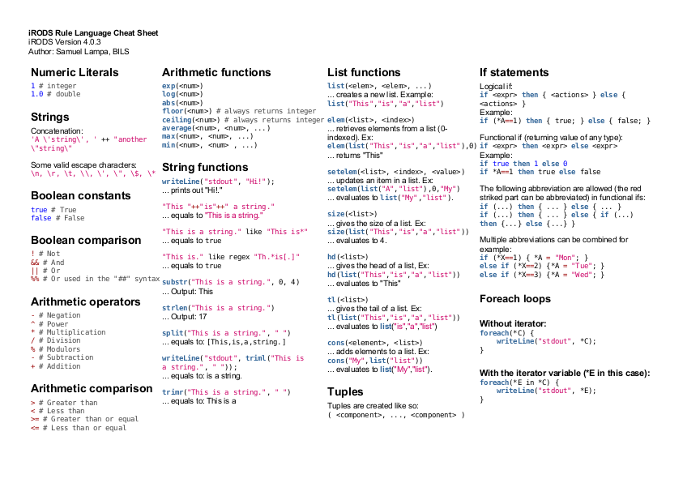
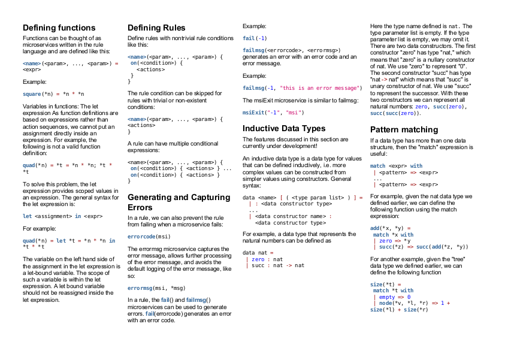

A cheatsheet for the iRODS rule language

There’s a lot to be said about iRODS (up for another blog post) but the one most interesting feature, in my opinion, is the rule language, which allows to define custom rules and policies for how data should be handled, totally automatically, depending on a lot of factors. For example “if data if untouched for three months, transparently migrate it from fast disk storage to archival tape storage”, etc etc.
The rule language is - as the name suggests - a whole language on its own though, and can be a bit daunting to quickly learn or get a good overview of. There is some documentation on the wiki, but it is not exactly eaily overviewed (great work is going on to improve the situation).
Thus, in a project I recently participated, with the aim to set up a data federation for proteomics data between BILS Bioinformatics Infrastructure in Sweden and the European Bioinformatics Institute in the UK (documented as a runnable vagrant box ), I realized I had to do something about the situation. So, I created a 2-page A4 cheat sheet . It is available on github , and I include images below as well, as a preview:
Page 1

Page 2

The raw format of the cheat sheet is HTML with inline CSS, as I could not find anything else that would give me the right control over fonts, formatting and coloring (probably possible with LaTeX, but it seemed to require too much work).
Hope you enjoy, and make sure to fork and improve if you see possibilities for that!